Collection · lion landing and architecture
Walk the updated rooms · Previous pass
WASD to walk; Space resets; 2 European gallery, 3 French gallery, 4 modern gallery, 5 stair landing. Wide-angle review now places the lion beside the modern doorway. New Muse wall plaster, vent and mounting studies, and softer modern lighting are installed. Main Hall presentation retained.
Room and object offsets remain provisional. Stairs need their filmed curve, rails and destinations; the landing roof around the stair opening is missing. Individual lion brick relief is unfinished. The large modern painting, gold seated sculpture/case, chair rack, adjoining room interiors and other missing rooms/objects remain to be completed.
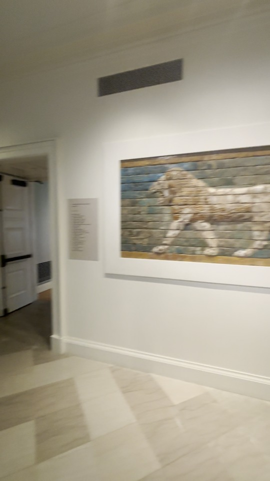
Video source: doorway, lion edge, pale mount and overhead vent. Latest native wide: lion between modern doorway and adjacent wall opening; exact offsets still provisional.
Latest native wide: lion between modern doorway and adjacent wall opening; exact offsets still provisional.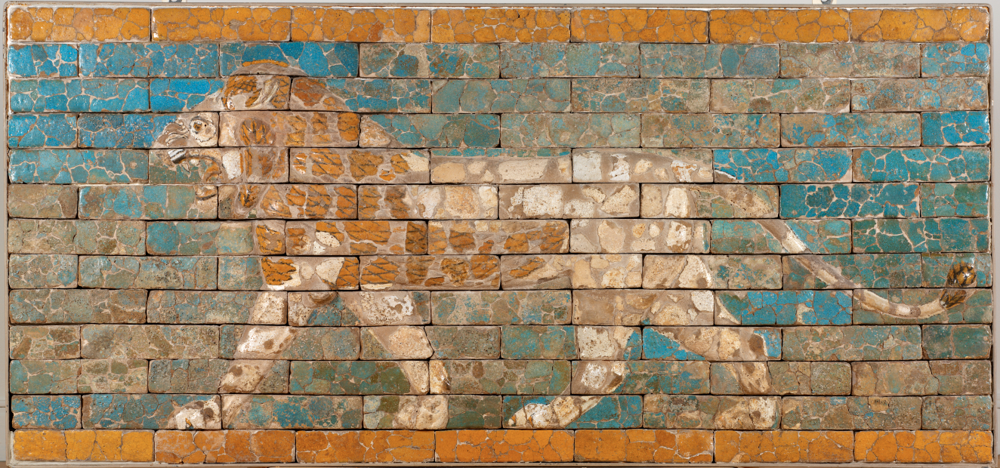
Official RISD Panel with Striding Lion34.652.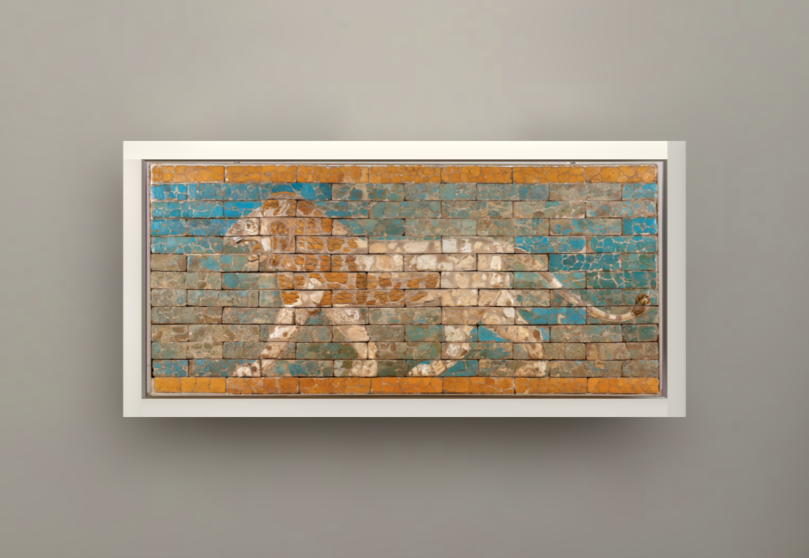
Original museum front preserved at catalogue width/height; individual brick relief unfinished.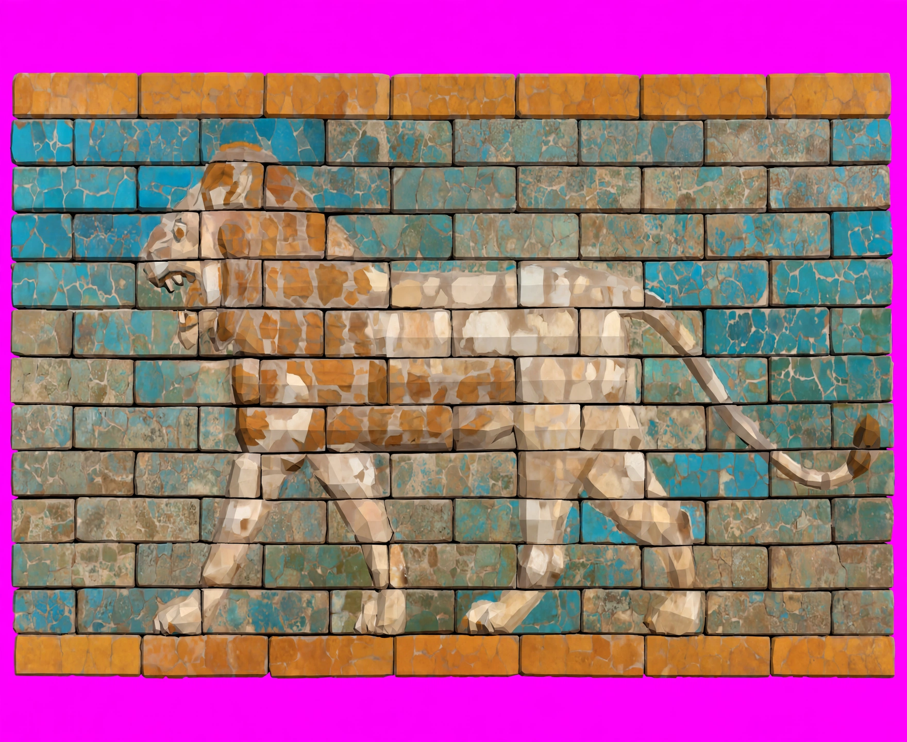
Muse trial changed aspect and damaged brick details; rejected for the visible front.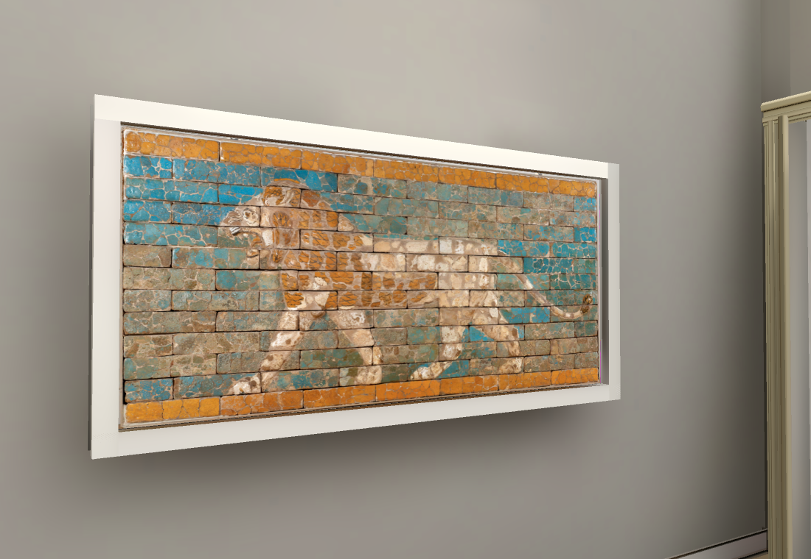
Closed low polygon slab uses official front and inferred Muse side/back colour; depth unmeasured.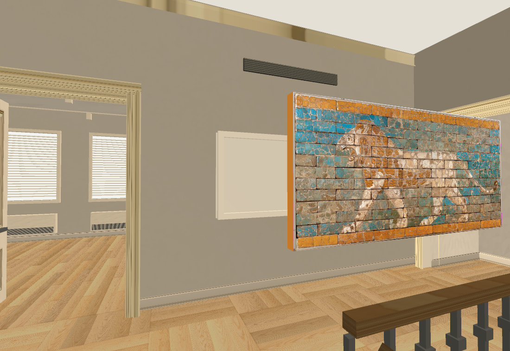
Earlier native trial caught a catalogue group offset that left the lion floating.Corrected against the actual drawn node position; side mounting depth remains provisional.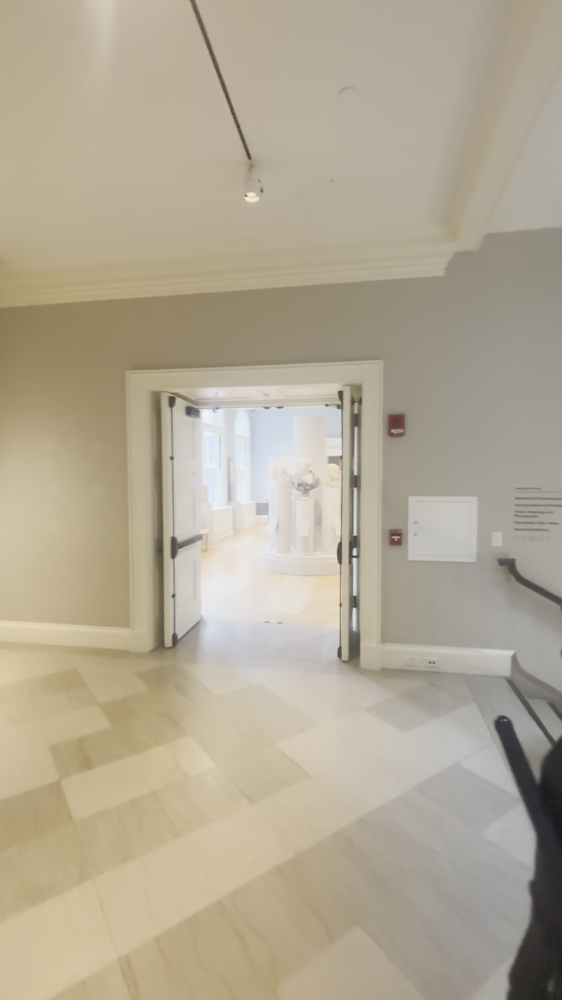
Wide-angle footage used as the plaster reference.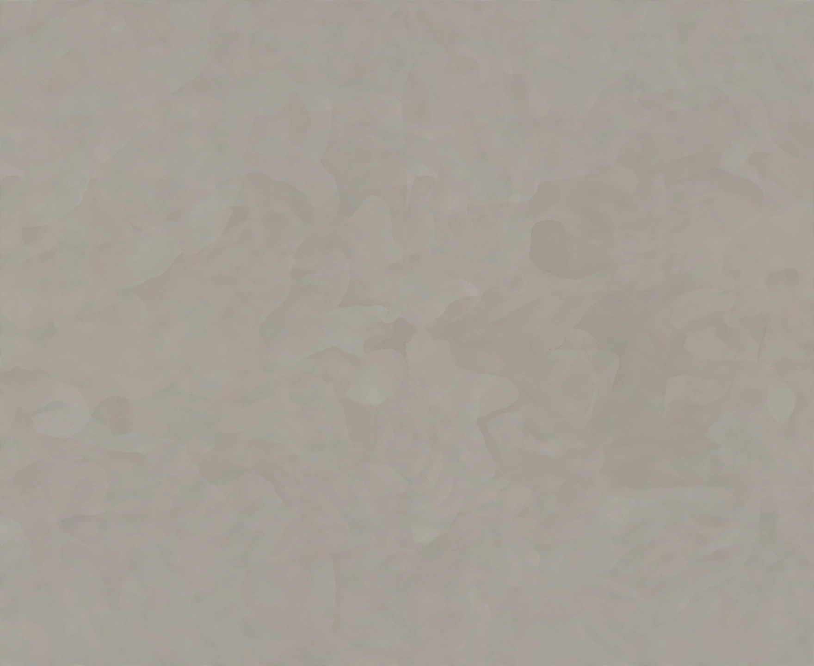
New Muse quiet matte plaster study; exact source colour remains unaccepted. Previous modern gallery had pronounced painting spotlight pools.
Previous modern gallery had pronounced painting spotlight pools.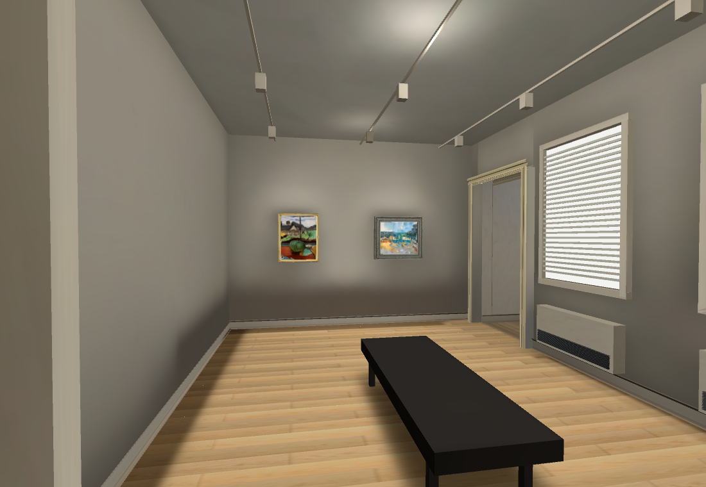
Current bake: softer lighting and new plaster; artwork ordering retained.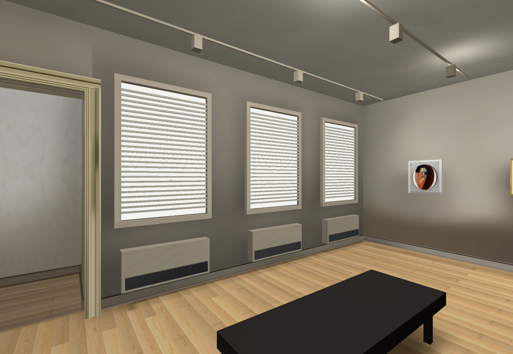
Modern window-wall and deeper doorway studies.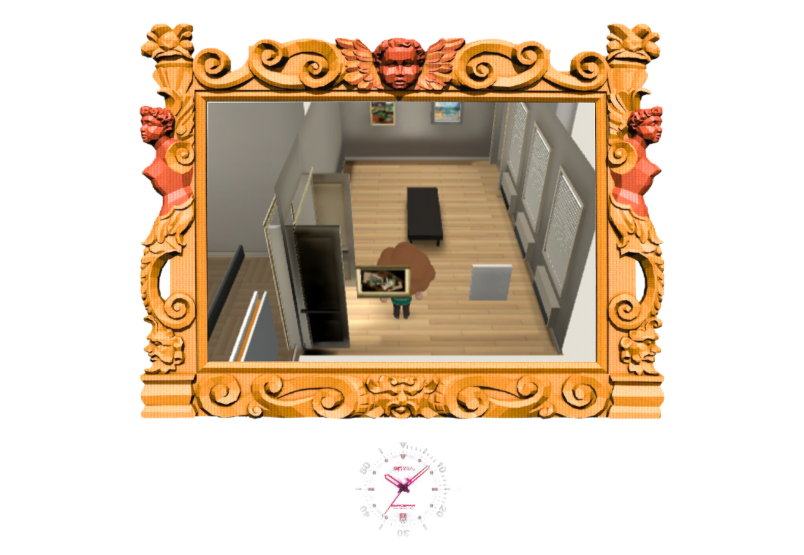
Actual walking view; dedicated Matisse/Villon frames and missing objects remain.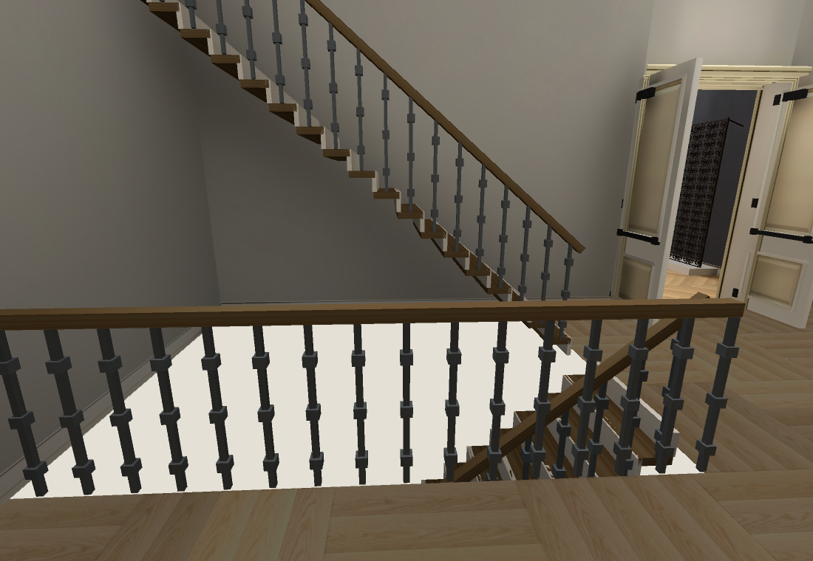
Physical stair opening; curved flights and roof still unfinished. Existing Main Hall presentation retained.
Existing Main Hall presentation retained.1,486 native surfaces baked; 174/174 browser navigation/camera checks plus keyboard walking, errors[]. Frame p9534.37ms; 60fps remains unverified. Owning Shell46/50 with four existing failures retained. Repository/source/hash checks pass.
Two OpenRouter Muse outputs, $0.02 this pass; cumulative $0.81 actual/$0.82 conservative. Lion trial was rejected for aspect/damage changes; official front protected. Full reconstruction unfinished. Heartbeat disabled; sole main worker continues.
Browser checks · Source and placement proof · Muse lion review · RISD lion record